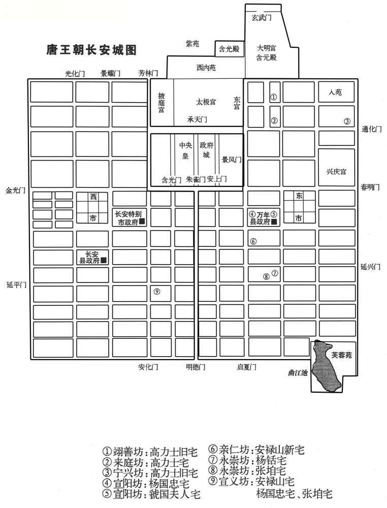
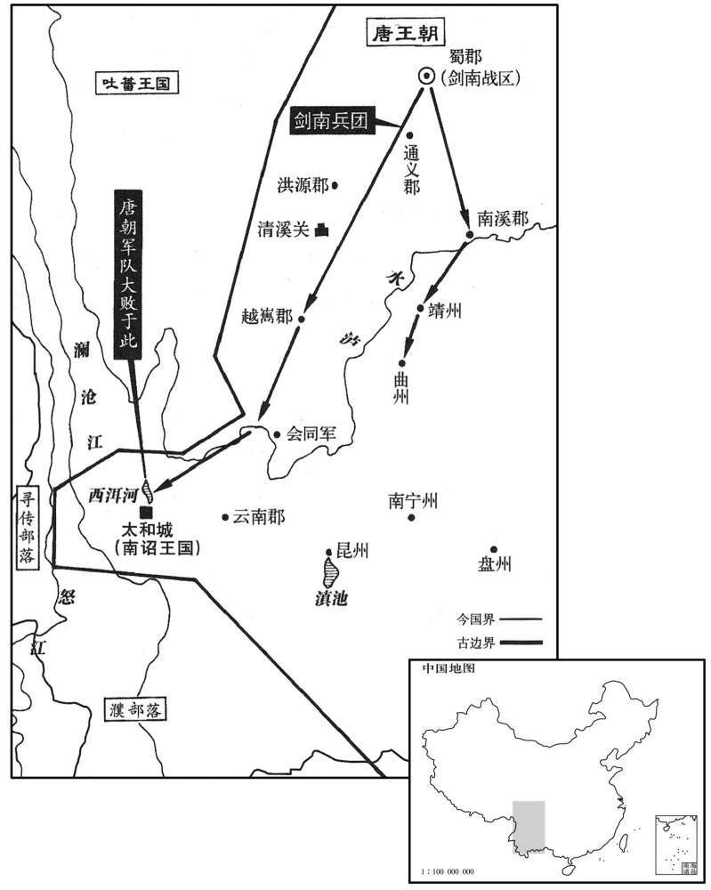
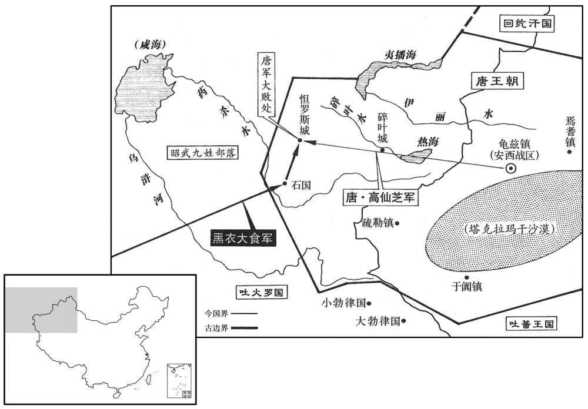
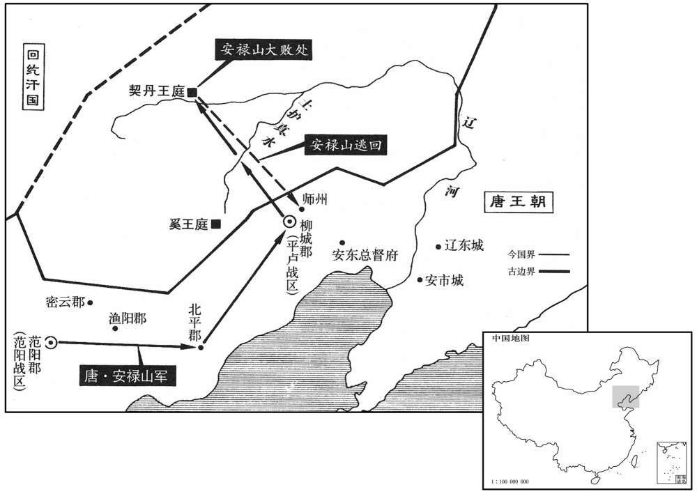

公元751年资治通鉴：本年记事、原文与白话对照
按原书编年位置阅读；追叙和史论不等于本年发生的事件。白话采用所据译本，缺译不以生成译文补齐。
卷216 · 本年记事
公元751年 · 唐玄宗至道大圣大明孝皇帝天宝十年
十年〔（辛卯，七五一）〕
上传原文的注释括号有异常，字符原样保留；无法可靠划分的段落默认全文显示。
本年事件索引（现代整理）

本年形势与背景参考图

本年形势与背景参考图

本年形势与背景参考图

本年形势与背景参考图
春，正月，壬辰，上朝献太清宫；癸巳，朝享太庙；〔朝，直遥翻；下同。〕甲子，合祭天地于南郊，赦天下，免天下今载地税。〔上书壬辰、癸巳，下书丁酉，则「甲子」当作「甲午」。〕
本段缺少可靠对应白话，原文完整保留；未使用生成译文。
丁酉，命李林甫遥领朔方节度使，以户部侍郎李暐知留后事。
本段缺少可靠对应白话，原文完整保留；未使用生成译文。
庚子，杨氏五宅夜游，〔杨铦、锜及韩、虢、秦三夫人为五宅。〕与广平公主从者争西市门，〔「广平」，新书作「广宁」；公主，上女也。从，才用翻。〕杨氏奴挥鞭及公主衣，公主坠马程昌裔下扶之，亦被数鞭。公主泣诉于上，上为之杖杀杨氏奴。〔被，皮义翻。为，于伪翻；下司为、使为、遽为同。〕明日，免昌裔官，不听朝谒。
本段缺少可靠对应白话，原文完整保留；未使用生成译文。
上命有司为安禄山治第于亲仁坊，〔治直之翻。〕敕令但穷壮丽，不限财力。既成，具幄帟器皿，充牣其中，有帖白檀床二，皆长丈，阔六尺；〔本草图经曰：檀香木如檀，生南海，种有黄、白紫之异。帟，音亦。长，直亮翻。〕银平脱屏风，帐方丈六尺；〔【章：十二行本作「一方一丈八」五字；乙十一行本同；孔本同；退斋校同；张校云「六」作「八」。】〕于厨貛之物皆饰以金银，金饭罂二，〔罂，于耕翻，缶也。〕银淘盆二，〔淘盆，所以淅米。〕皆受五斗，织银丝筐及笊篱各一；〔筐，去王翻，所以沥米。笊，侧绞翻。篱，音离。笊篱，所以轑釜取食物。〕他物称是。〔称，尺证翻。〕虽禁中服御之物，殆不及也。上每令中使为禄山护役，〔护，监护也。使，疏吏翻；下同。〕筑第及造储偫赐物，常戒之曰：「胡眼大，勿令笑我。」〔偫，直里翻。大，唐佐翻。〕
本段缺少可靠对应白话，原文完整保留；未使用生成译文。
禄山入新第，置酒，乞降墨敕请宰相至第。是日，上欲于楼下击球，遽为罢戏，命宰相赴之。日遣诸杨与之选胜游宴，侑以梨园教坊乐。〔梨园，皇帝梨弟子也。教坊，内教坊也。〕上每食一物稍美，或后苑校猎获鲜禽，辄遣中使走马赐之，络绎于路。
本段缺少可靠对应白话，原文完整保留；未使用生成译文。
甲辰，禄山生日，上及贵妃赐衣服、宝器、酒馔甚厚。〔僎，雏恋翻，又雏皖翻。〕后三日，召禄山入禁中，贵妃以锦绣为大襁褓，裹禄山，使宫人以彩舆舁之。〔襁，居两翻。升，羊茹翻。〕上闻后宫欢笑，问其故，左右以贵妃三日洗禄儿对。上自往观之，喜，赐贵妃洗儿金银钱，复厚赐禄山，尽欢而罢。〔复，扶又翻。〕自是是禄山出入宫掖不禁，或与贵妃对食，或通宵不出，颇有丑声闻于外，上亦不疑也。〔闻，音问。观明皇所以待禄山者，昏庸之主所不为，殆天夺之魄也。考异曰：禄山事亦：「正月二十日，禄山生日玄宗及太真赐禄山器皿衣服，件目甚多。后三日，召禄山入，内贵妃以锦绣绷缚禄山，令内人以彩舆升之，宫中欢呼动地。玄宗使人问之，报云：『贵妃与禄儿作三日洗儿。』玄宗就观之，大悦。因赐贵妃洗儿金银钱物，极欢而罢。自是宫中皆呼禄山为禄儿，不禁其出入。」温畬天宝乱离西幸记：「禄山谄约杨妃，誓为子母；自虢国已下，次及诸王，皆戏禄儿，与之促膝娱宴。上时闻后宫三千合处喧笑，密侦则禄山果在其内。贵戚猱杂，未之前闻；凡曰钗鬟，皆啖厚利；或通宵禁掖，昵狎嫔嫱。和士开之出入卧内，方此为疏；蓟城侯之获厕刑余，又奚足尚！」王仁裕天宝遗事云：禄山常与妃子同食无所不至。帝恐外人以酒毒之，遂赐金牌子系于臂上，每有王公召宴，欲沃以巨觥，即禄山以金牌示之云，『准敕戒洒。』」今略取之。〕
本段缺少可靠对应白话，原文完整保留；未使用生成译文。
安西节度使高仙芝入朝，献所擒擒突骑施可汗、吐蕃酋长、石国王、朅师王。加仙芝开府仪同三司。寻以仙芝为河西节度使，代安思顺；思顺讽群胡割耳剺面请留己，制复留思顺于河西。〔剺，力之翻。复，扶又翻。〕
本段缺少可靠对应白话，原文完整保留；未使用生成译文。
安禄山求兼河东节度。二月，丙辰，以河东节度使韩休为左羽林将军，以禄山代之。
本段缺少可靠对应白话，原文完整保留；未使用生成译文。
户部郎中吉温见禄山有宠，又附之，约为兄弟。说禄山曰：「李右丞相虽以时事亲三兄，〔天宝元年，改侍中为左相，中书令为右相。李林甫时为右相，中书令之职也，「丞」字衍。安禄山，第三。说，式芮翻。不必肯以兄为相；温虽蒙驱使，终不得超擢。兄若荐温于上，温即奏兄堪大任，共排林甫出之，为相必矣。」禄山悦其言，数称温才于上，上亦忘曩日之言。〔数，所角翻。忘，巫放翻。言，见上卷四载。〕会禄山领河东，因奏温为节度副使、知留后，以大理司直张通儒为留后判官，〔大理司直，从六品上。通儒带司直而为河东留后判官，是后节镇有带六曹尚书，有带三公、三师，其属亦率带六品以下朝职，谓之带职。黄琮曰：外官带职，有宪衔，有检校，宪衔自监察御史至御史大夫，检校自国子祭酒至三公，唐及五代之制也。〕河东事悉以委之。
本段缺少可靠对应白话，原文完整保留；未使用生成译文。
是时，杨国忠为御史中丞，方承恩用事。禄山登降殿阶，国忠常扶掖之。〔掖，音亦。〕禄山与王鉷俱为大夫，鉷权任亚于李林甫。禄山见林甫，礼貌颇倨。林甫阳以他事召王大夫，鉷至，趋拜甚谨；禄山不觉自失，容貌益恭。林甫与禄山语，每揣知其情，先言之，〔揣，初委翻。〕禄山惊服。禄山于公卿皆慢侮之，独惮林甫，每见，虽盛冬，常汗沾衣。林甫乃引与坐于中书厅，〔厅，他经翻。中庭曰听事，言受事察讼于是也。汉晋皆作「听事」，六朝以来乃始加「捜」而径曰厅。〕抚以温言，自解披袍以覆之。禄山忻荷，言无不尽，〔覆，敷又翻。荷，下可翻。〕谓林甫为十郎。〔林甫，第十。〕既归范阳，刘骆谷每自长安来，必问：「十郎何言﹖」得美言则喜；或但云「语安大夫，〔语，牛倨翻。〕须好检校！」辄反手据床曰：「噫嘻，我死矣！」
本段缺少可靠对应白话，原文完整保留；未使用生成译文。
禄山既兼领三镇，赏刑己出，日益骄恣。自以曩时不拜太子，〔事见上卷六载。〕见上春秋高，颇内惧；又见武备堕弛，〔堕，读曰隳。〕有轻中国之心。孔目官严庄、〔孔目官，衙前吏职也，唐世始有此名；言凡使司之事，一孔一目，皆须经由其手也。〕掌书记高尚〔掌书记，位判官下，古记室参军之任。〕因为之解图谶，劝之作乱。〔为，于伪翻。谶，楚谮翻。〕
本段缺少可靠对应白话，原文完整保留；未使用生成译文。
禄山养同罗、奚、契丹降者八千余人，谓之「曳落河」。〔契，欺讫翻，又音吃。降，户江翻。考异；曰：禄山事迹云：养为己子。按养子必无八千之数，今不取。〕曳落河者，胡言壮士也。及家僮百余人，皆骁勇善战，一可当百。又畜战马数万匹，〔骁，坚尧翻。畜，许六翻。〕多聚兵仗，分遣商胡诣诸道贩鬻，岁输珍货数百万。〔输，舂遇翻。〕私作绯紫袍、鱼袋，以百万计。以高尚。严庄、张通儒及将军孙孝哲为腹心，史思明、安守忠、李归仁、蔡希德、牛廷玠、向润容、〔向，式亮翻，姓也。〕李庭望、崔干佑、尹子奇、何千年、武令珣、能元皓、〔能，奴代翻。何氏姓苑云：能姓，出自长广。〕田承嗣、田干真、阿史那承庆为爪牙。尚，雍奴人，〔雍奴，天宝元年更名武清，属范阳郡。此因旧县名书之。〕本名不危，颇有辞学，薄游河朔，贫困不得志，常叹曰：「高不危当举大事而死，岂能啮草根求活邪！」禄山引置幕府，出入卧内。尚典笺奏，庄治簿书。〔治，直之翻。〕通儒，万岁之子；〔张万岁，唐初掌貛牧。通儒必非其子，或者其孙也；否则别又有一张万岁。〕孝哲，契丹也。承嗣世为卢龙小校，禄山以为前锋兵马使。〔【章：十二行本「使」下有「治军严整」四字；乙十一行本同；孔本同；张校同；退斋校同。】〕尝大雪，禄山按行诸营，〔校，户教翻。使疏吏翻。行，下孟翻。〕至承嗣营，寂若无人，入阅士卒，无一人不在者，禄山以是重之。
本段缺少可靠对应白话，原文完整保留；未使用生成译文。
夏，四月，壬午，剑南节度使鲜于仲通讨南诏蛮，大败于泸南。〔泸水之南也。武后垂拱元年，置长城县，属絩州，天宝初更名泸南县。考异曰：杨国忠传：「南蛮质子合罗凤亡归不获，帝怒，欲讨之。国忠荐阆州人鲜于仲通为益州长史，令帅精兵八万讨南蛮」按南诏传：「七年，蒙归义死，诏合罗凤袭云南王」，不云尝为质子亡归也。九年，姚州自以张虔陀侵之故反，时鲜于仲通已为益州长史。国忠传与南诏传相违。新、旧书皆如此，恐误。〕时仲通将兵八万分二道出戎、嶲州，至曲州、靖州。〔分为二道，一道出戎州，一道出嶲州也。自戎州开边县西行七十里至曲州；自嶲州西南行八百余里渡泸水。曲州本隋之恭州，古朱提之地，武德八年更名曲州。靖州，隋属协州，古夜郎地，武德初分协州置靖州。嶲，音髓。〕南诏王合罗凤谢〔【章：十二行本「谢」上有「遣使」二字；乙十一行本同；孔本同；张校同。】〕罪，请还所俘掠，城云南而去，〔去年，南诏攻陷云南城，必有夷毁处，故请城之以谢罪。〕且曰：「今吐蕃大兵压境，若不许我，我将归命吐蕃，云南非唐有也。」仲通不许，囚其使。进军至西洱河，与合罗凤战，军大败，〔使，疏吏翻。洱，乃吏翻。〕士卒死者六万人，仲通仅以身免。杨国忠掩其败状，仍叙其战功。〔考异曰：唐历云「令仲通白衣领节度事」，旧传无之。按既掩败叙劲，岂得复白衣领职！〕合罗凤敛战尸，筑为京观，〔观，古玩翻。〕遂北臣于吐蕃。蛮语谓弟为「锺」，吐蕃命合罗凤为「赞普锺」，号曰东帝，给以金印。合罗凤刻碑于国门，言己不得已而叛唐，且曰：「我世世事唐，受其封爵，后世容复归唐，当指碑以示唐使者，知吾之叛非本心也。」〔其后德宗之世，异牟寻卒复归唐。复，扶又翻。〕
本段缺少可靠对应白话，原文完整保留；未使用生成译文。
制大募两京及河南、北兵以击南诏；人闻云南多瘴疠，未战士卒死者什八九，莫肯应募。杨国忠遣御史分道捕人，连枷送诣军所。旧制，百姓有勋者免征役，时调兵既多，〔调，徒吊翻。〕国忠奏先取高勋。于是行者愁怨，父母妻子送之，所在哭声振野。
本段缺少可靠对应白话，原文完整保留；未使用生成译文。
高仙芝之虏石国王也，石国王子逃诣诸胡，具告仙芝欺诱贪暴之状。〔诱，音酉。〕诸胡皆怒，潜引大食欲共攻四镇。仙芝闻之，将蕃、汉三万众击大食，〔将，即亮翻。考异曰：马宇段秀实别传云「蕃、汉六万众」，今从唐历。〕深入七百余里，至恒罗斯城，〔或作「怛罗斯城」。〕与大食遇。相持五日，葛罗禄部众叛，〔葛罗禄，即葛逻禄。〕与大食夹攻唐军，仙芝大败，士卒死亡略尽，所余纔数千人。右威卫将军李嗣业劝仙芝宵遁，道路阻隘，拔汗那部众在前，人畜塞路；〔拔汗那时从仙芝击大食。塞，悉则翻。〕嗣业前驱，奋大梃击之，人马俱毙，仙芝乃得过。
本段缺少可靠对应白话，原文完整保留；未使用生成译文。
将士相失，别将洴阳段秀实〔洴阳郡本陇州陇东郡，元年改郡名，有洴阳县，盖元魏所置。梃，待鼎翻。将，即亮翻；下同。洴口坚翻。〕闻嗣业之声，诟曰：〔诟，苦候翻。〕「避敌先奔，无勇也；全已弃众，不仁也。幸而得达，独无愧乎！」嗣业执其手谢之，留拒追兵，收散卒，得俱免。还至安西，言于仙芝，以秀实兼都知兵马使，为已邻官。
本段缺少可靠对应白话，原文完整保留；未使用生成译文。
八月，丙辰，武库火，烧兵器三十七万。〔考异曰：唐历云四十七万事，今从实。〕
本段缺少可靠对应白话，原文完整保留；未使用生成译文。
安禄山将三道兵六万〔幽州、平卢、河东三道。〕以讨契丹，以奚骑二千为乡导。〔骑，奇寄翻；下同乡，读曰向。〕过平卢千余里，至土护真水，遇雨。〔自雄武军东北渡滦河，有古卢龙镇，有斗陉岭。自古卢龙北经九荆岭、受米城、张洪隘，渡石岭，至奚王帐六百里；又东北傍吐护真河五百里，至奚、契丹牙帐。又出檀州燕乐县东北百八十五里，至长城口，又北八百里有吐护真河，奚王牙帐也。〕禄山引兵昼夜兼行三百余里，至契丹牙帐，契丹大骇。时久雨，弓弩筋胶皆弛，大将何思德言于禄山曰：「吾兵虽多，远来疲弊，实不可用，不如按甲息兵以临之，不过三日，虏必降。」〔将，即亮翻；下同。降，户江翻。〕禄山怒，欲斩之，思德请前驱效死。思德貌类禄山，虏争击杀之，以为已得禄山，勇气增倍。奚复叛，与契丹合，夹击唐兵，杀伤殆尽射禄山，中鞍折冠簪，失履，独与麾下二十骑走；会夜，追骑解，得入师州。〔贞观三年，以室韦部落置师州，治营州之废阳师镇。复，扶又翻。射，而亦翻。中，竹仲翻。折，而设翻。〕归罪于左贤王哥解、〔哥解盖自突厥来降者。解，户买翻。〕河东兵马使鱼承仙而斩之。
本段缺少可靠对应白话，原文完整保留；未使用生成译文。
平卢兵马使史思明惧，逃入山谷近二旬，〔近，其靳翻。〕收散卒，得七百人。平卢守将史定方将精兵二千救禄山，契丹引去，禄山乃得免。至平卢，麾下皆亡，不知所出。史思明出见禄山，禄山喜，起，执其手曰：「吾得汝，复何忧！」〔复，扶又翻。〕思明退，谓人曰：「向使早出，已与哥解并斩矣。」〔史言史思明之智数过于安禄山。〕契丹围师州，禄山使思明击却之。
本段缺少可靠对应白话，原文完整保留；未使用生成译文。
冬，十月，壬子，上幸华清宫。
本段缺少可靠对应白话，原文完整保留；未使用生成译文。
杨国忠使鲜于仲通表请己遥领剑南；十一月，丙午，以国忠领剑南节度使。
本段缺少可靠对应白话，原文完整保留；未使用生成译文。